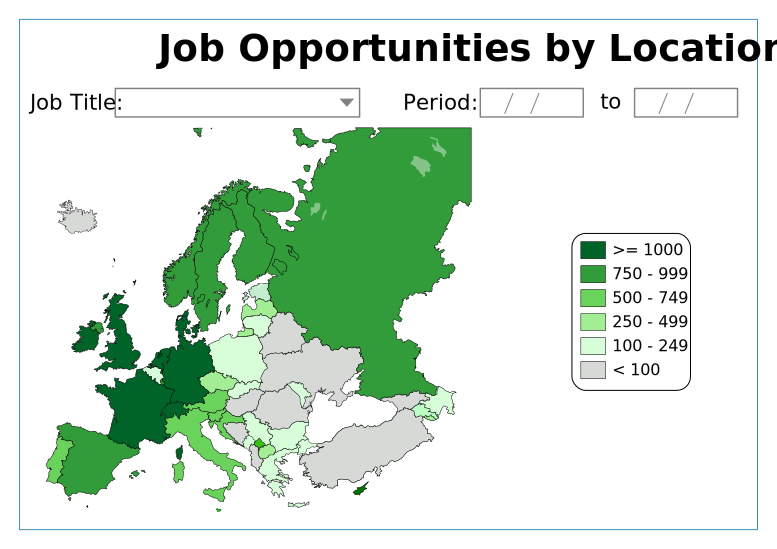
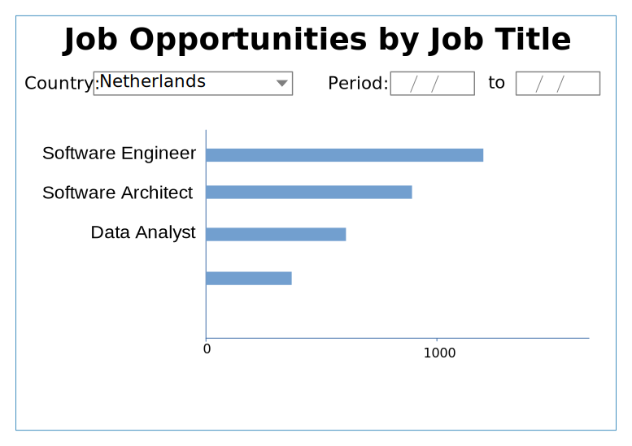
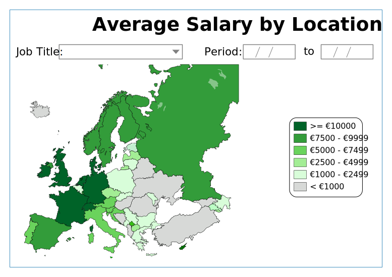
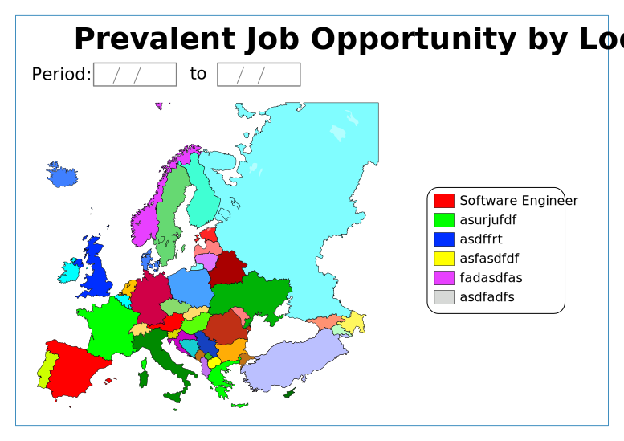

The Web UI will be build using Plotly Dash.
The idea is to have this UI in a Docker container running in AWS Lambda, using the AWS API Gateway.
The services that will get the data from the database will be running in AWS Lambda also, with a GraphQL API.
Below are the screens that will be available in the Web UI and some sample SQL queries to get the data:

Query:
SELECT job_title, country, sum(num_job_offers) AS opps
FROM jobs_table_1
WHERE date BETWEEN period_ini AND period_end
GROUP BY job_title, country

Query:
SELECT job_title,
SUM(num_job_offers) AS offers
FROM jobs_table_2
WHERE date BETWEEN period_ini AND period_end
[AND country = ‘NL’]
GROUP BY job_title
ORDER BY offers DESC

Query:
SELECT country, avg(avg_salary) as sal
FROM jobs_table_3
WHERE date BETWEEN period_ini AND period_end
AND job_title = ‘Software Engineer’
AND avg_salary IS NOT NULL
GROUP BY country
Query:
SELECT job_title,
AVG(min_salary) AS avg_min,
AVG(avg_salary) AS avg_sal,
AVG(max_salary) AS avg_max,
FROM jobs_table_4
WHERE date BETWEEN period_ini AND period_end
[AND country = ‘NL’]
AND avg_salary IS NOT NULL
GROUP BY job_title
ORDER BY avg_sal DESC

Query:
SELECT job_title, state,
SUM(num_job_offers) AS offers
FROM jobs_table_5
WHERE date BETWEEN period_ini AND period_end
GROUP BY job_title, state
ORDER BY offers DESC
CREATE TABLE jobs (
job_title VARCHAR(255),
country CHAR(2),
state CHAR(2),
city VARCHAR(255),
num_offers INTEGER,
grabbed_at DATE,
min_salary DECIMAL,
avg_salary DECIMAL,
max_salary DECIMAL,
jdd_run_id CHAR(14),
origin VARCHAR(30)
)
jdd_run_id:
%Y %m%d%H%M%S
20210612163145
origin:
themuse